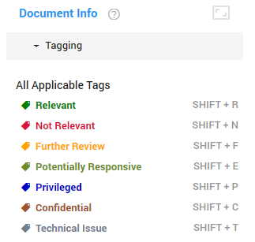
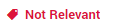
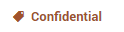
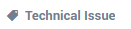
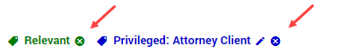
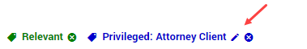

The document needs further review by another investigator. When selecting this tag, you are asked to specify the additional investigator.
When reviewing documents, you can label the documents by applying tags to it. With these tags, you can show that a document is relevant, not relevant, or something else.
Tags can be added, deleted and edited in Configuration > Tags
—see tag configuration settings in
When using ZyLAB ONE for an internal investigation, these are the default tags available:

To quickly add tags, use the (default) shortcut keys displayed next to the tag.
| Relevant | The document contains evidence. |
|
Shift + R |
| Not Relevant | The document does not contain evidence. |  | Shift + N |
| Further Review |
The document needs further review by another investigator. When selecting this tag, you are asked to specify the additional investigator. |
Shift + F | |
| Potentially Relevant | The document potentially contains evidence. When selecting this tag, you are asked to specify the reason(s) for its potential relevance. | Shift + E | |
| Privileged | The document contains privileged information between attorney and client. When selecting this tag, you are asked to specify if the document is ‘Attorney Client’ related or ‘Attorney Work Product’ related. | Shift + P | |
| Confidential | The document contains confidential information that cannot be released to the public. When selecting this tag, you are asked to specify what type of confidential information it contains. |  | Shift + C |
| Technical Issue | The document contains a technical issue, that needs to be solved (either by your administrator or ZyLAB Support). When selecting this tag, you are asked to specify what type of issue it is. |  | Shift + T |
Multiple tags can be placed on the same document, but some are not compatible. For example, you cannot apply both the tag ‘Relevant’ and ‘Not Relevant’ to the same document. If you place either one of them on the document, the other will disappear.
Added tags will appear at the top of the document and can be deleted by clicking the delete button.

If you want to edit the content of a tag (ie. you’ve added one of the options to the tag), you can do so by clicking the edit button.

Tags used for Assisted Review
When you’ve created an issue in Assisted Review and created the first training batch, new tags will automatically be made. These tags will look like this: Name issue – R and Name issue – NR.
If you have created an issue called Price fixing, then the tags will look like this:
Price fixing – R and Price fixing – NR.
These tags are used to review the documents and train the AI. ‘R’ stands for ‘Relevant’ and ‘NR’ stands for ‘Not Relevant’.
|
|
Note: Do not forget to also tag all relevant documents with the ‘Relevant’ tag. This can be done during the document review, or by bulk tagging them after review. |